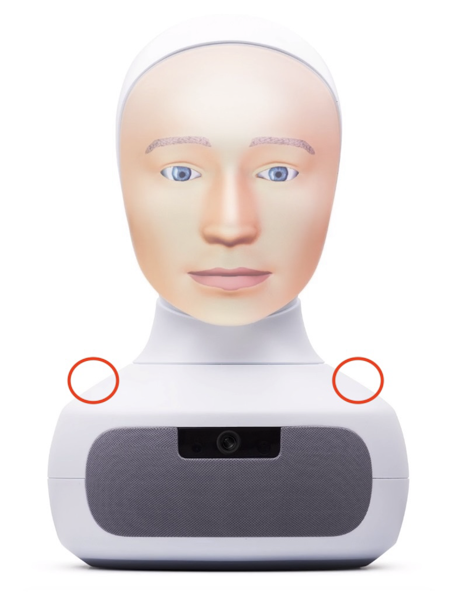

← Selected work
Bachelor’s thesis / 2025 – 2026
Helping Furhat hear more clearly
Mechanical microphone design, rapid prototyping, and automated speech-recognition evaluation.
- Context
- TH Köln · In collaboration with Furhat Robotics, Stockholm
- Period
- October 2025 – April 2026
- My work
- Bachelor’s thesis · Mechanical design & experimental evaluation
The idea
A social robot depends on understanding the people around it. For my bachelor’s thesis, I investigated how the mechanical implementation of Furhat’s MEMS microphones influences automatic speech recognition (ASR).
My contribution
- Redesigned the microphone implementation, optimising mounting, isolation, and acoustic channel geometry.
- Used CAD and rapid prototyping to develop and compare physical implementations.
- Built an automated ASR test setup to compare microphone systems under multiple signal-to-noise ratio (SNR) conditions.
- Evaluated the results statistically to assess the effect of the mechanical redesign.
9.3%reduction in mean word error rate
Measured improvement in speech recognition
The redesigned implementation reduced mean word error rate by 9.3%, with statistically significant improvements across all tested SNR conditions. The comparison used an automated test setup covering multiple noise conditions.

